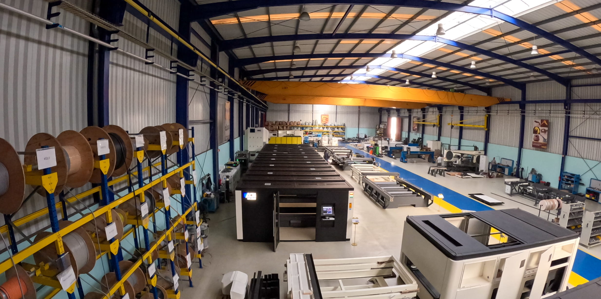

ACN Cutting Systems · Grupo Motofil
Engenharia que
define o corte.
Laser de fibra, plasma, oxicorte e furação. Sistemas de corte desenvolvidos e fabricados de raiz em Ílhavo, Portugal.
Explorar sistemas01 / O que fazemos
A máquina certa começa na sua peça.
Anos a fabricar máquinas de corte
Anos de engenharia do grupo
Países servidos
Fabrico interno
02 / Os nossos sistemas
um fornecedor. múltiplas soluções.
ACN / OPTIONS
Add-ons
ACN MANUFACTURE
Engineered around
your production.
Not every production process fits a standard machine.
ACN Manufacture brings together our engineering and manufacturing capabilities to develop equipment adapted to your specific requirements — from customised cutting systems to fully integrated production solutions.
Your process.
Our engineering.
We work closely with our customers to understand their production, identify the challenges and develop the right solution. From machine configuration and automation to handling systems and specialised applications, we build equipment around the way you work.
- 01
Understand
We analyse your process, requirements and production goals.
- 02
Engineer
Our engineering team develops the machine architecture and solution.
- 03
Build
We manufacture and integrate the equipment in-house.
- 04
Deliver
A complete solution, adapted to your production.
"We came to ACN with a specific production challenge, not a standard machine specification. Their engineering team worked with us to understand the process and develop a solution around our requirements. The result was a machine that fits our production exactly."
Built around your process. Manufactured by ACN.
Let’s talk ↗Especificações completas disponíveis mediante pedido.
Pedir catálogo
Chão de fábrica · Ílhavo, Portugalacn cutting systems made in portugal
Da estrutura ao primeiro corte. Sob o mesmo teto.
Assistência & formação
Consumíveis
04 / Vamos falar
O seu próximo corte começa aqui.
- Telefone
- +351 234 320 900
- Morada
- Z. Ind. das Ervosas
3830-252 Ílhavo, Portugal